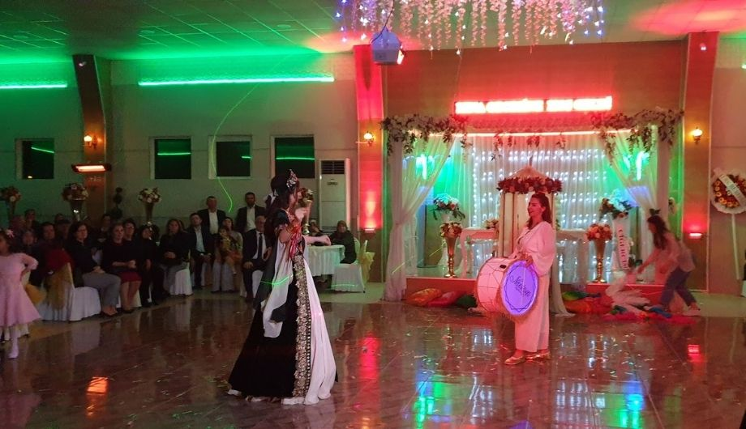

Sektörünün önde gelen firmalarından olan Sidelya Düğün Salonu Kırklareli'de faaliyet gösteriyor!
Söz, nişan, kına gecesi ve düğün organizasyonlarınızın tümünü gerçekleştiriyor. Aşkınız ile attığınız ilk adımdan itibaren yanınızda oluyor. Hayallerinizdeki organizasyonları profesyonel ekibimiz ile birlikte tasarlıyoruz. Her davetiniz için farklı konsept tercihleriniz var ise bu konuda organizasyon sorumlumuzdan ve gerekli durumlarda çözüm ortaklarımızdan destek alıyoruz...
Bembeyaz masa örtüleri ile süslediğimiz masalarınız ile aşkınızın zarafetini temsil eden bir atmosfer yaratıyoruz. Salonumuzu gelin yolunuzdan itibaren tasarlıyoruz. Böylelikle salonumuzda uyumlu bir görünüm yaratıyoruz.
Davetlilerinizin masalarını gelin yolu şamdanları ile bir örnek olan altın rengi çiçekliklerimiz ile süslüyoruz. Masalardaki dekorları da salonumuzun dekorasyonuna göre değiştirebiliriz. Çiçeklikler yerine, tüyler, çiçekler ya da şamdanlar tercih edebiliriz. Sandalyelerinizi ise konseptinize uygun renklerde kurdeleler ile renklendiriyoruz..
Söz, nişan, kına gecesi, düğün ve diğer özel günleriniz için Sidelya Düğün Salonu, her detayın düşünüldüğü eşsiz organizasyonlar sunar. Profesyonel ekibimizle yanınızdayız.
Yemekli veya yemeksiz seçenekler sunan düğün menülerimiz, gıda güvenliği garantisiyle özenle hazırlanır. Şık sunumlarla konuklarınız için unutulmaz bir yemek deneyimi sunuyoruz.
Sidelya Düğün Salonu’nda profesyonel ışık, ses ve sahne hizmetleri ile gecenizi unutulmaz kılıyoruz. Müzisyenlerimiz ilk danstan itibaren kesintisiz eğlence sunuyor.
Çiftimiz için de nikah töreni için nikah masası, kına merasimi gerçekleştirilecekse taht da bulunan bir kına köşesi dekore ediyoruz. Hatta farklı fotoğraf çekim alanları için de istekleriniz dahilinde süslemeler yapabiliriz!
Yemekli ve yemeksiz davetlerinizi düzenlemek için Sidelya Düğün Salonu mutfağında da yoğun bir tempo başlatılıyor. Düğün menülerimiz dahilinde tercih ettiğiniz her lezzet gıda güvenilirliği garantisi ile hazırlanıyor. Şık sunumlar da konuklarınızın beğenisine sunuluyor. Davet sonunda dek süren bu yoğunluk düğün pastanızın servis edilmesi ile son buluyor.
Konuklarınız şık bir karşılama ile yerlerine buyur ediliyor. İkram menüleri ve şık sunumlar başlatılıyor ve müzisyenlerimiz de sahnede yerlerini alarak çiftimizi ilk dans için sahneye davet ediyor. Gece boyunca kesintisiz eğlence sizleri bekliyor…
En özel anlarınızı Kırklareli Sidelya Düğün Salonunda unutulmaz kılmak için bizimle iletişime geçmenizi bekliyoruz. Böylelikle hem istekleriniz dahilinde fiyat teklifleri alabilir hem de planlama ve hazırlıklar için de görüşme sağlayabilirsiniz!
Copyright © Meriç Bilgisayar
Distributed by: Themewagon